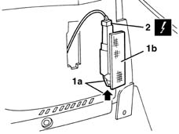
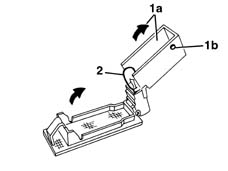

7040G30 boot light bulb holder - r r
- Path
- Procedures > 70 FITTINGS > 7040 BODYSHELL INTERIOR TRIMS AND FITTINGS > 7040G vehicle compartment lightening system > 7040G30 boot light bulb holder - r r
- Kind
- repair procedure (removal / refitting; the operation number is the code)
- Applies to
- all engines; all production periods
- Interactive page
- https://sloeber94.github.io/elrnDB-lYpsln/en/#/2429589
Applies to: all engines; all production periods
 Removing
Removing
 Refitting
RefittingOpen the tailgate.
1. Working in the direction of the arrow, release the retainer (1a) and move the bulb holder (1b).
2. Disconnect the electrical connection.
 | Name | Connector |
|---|---|---|
2 | Boot courtesy light |

Applies to: all engines; all production periods
1. If necessary, lift up the protection (1a) and release the retainers (1b).
2. Extract the bulb from the bulb holder (press fit).

Applies to: all engines; all production periods
Refitting
RemovingCheck that the bulb holder is undamaged.
If removed, refit the bulb and close the protection.
Connect the electrical connection.
Fit the bulb holder in place fitting the retainer.
Check that the bulb is working properly.
Topics linked from this page (1)
Topics that link to this page (12)
- 5570T26 aerial for car radio - r+r
- 5580C50 (HEAD- BAG MODULE ) (one), left or right - R.R.
- 5580H12 parking obstacle detection device buzzer - r r
- 7030B47 GUIDE device for sliding roof movement control cables - R.R .
- 7030B48 FIXED REAR TRANSPARENT section of sliding roof - R.R .
- 7030B50 sun roof guide , one , lh or rh - r r
- 7030B70 sun-roof control switch - r+r
- 7040H10 roof panel lining - r r
- 7040H16 roof panel lining - r r
- 7040H42 rear pillar trim - r r
- 7065B10 l/h or r/h rear safety belt (one) - r+r
- 7065B18 CENTRE REAR SEAT BELT - R.R.